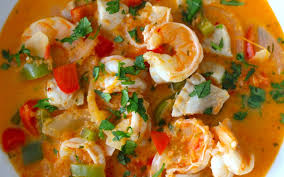

Moqueca

What is it?
Moqueca is a Brazilian stew made with fish and or shrimp
cooked with vegetables (onion, tomatoes, peppers),
coconut milk and dende oil.
Ingredients
- One lb. shrimp and or fish
- Three large onions
- Six tomatoes
- Three red or yellow bell peppers
- One cup coconut milk
- One tablespoon dende oil
Steps
- Place onions, tomatoes, bell peppers, and coconut milk in a blender
- Blend all together until well mixed
- Pour blended ingredients into a large saucepan
- Bring to a boil, then reduce temperature to medium and cook for 10 minutes
- Add fish and/or shrimp and cook for 5 more minutes
- Serve with rice and farofa!